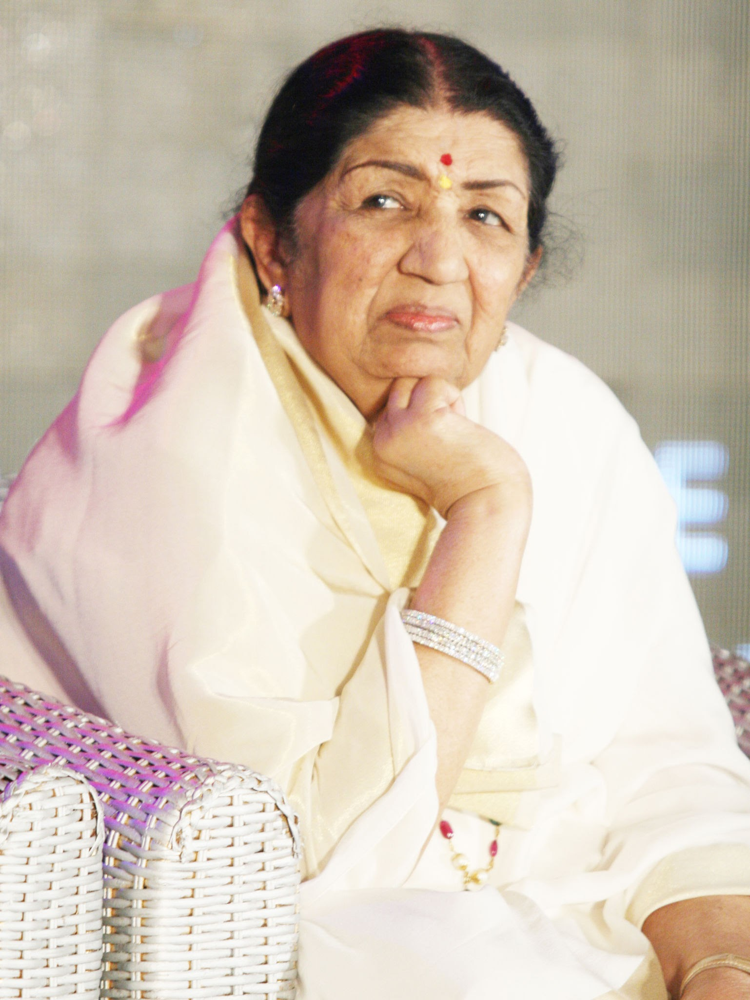

Indian Playback Singer
(1929-2022)
Overview
Lata Mangeshkar was born in Indore on September 28, 1929, and became, quite simply, the most popular playback singer in Bollywood's history. She sung for over 50 years for actresses from Nargis to Preity G Zinta, as well as recorded albums of all kinds (ghazals, pop, etc). Until the 1991 edition, when her entry disappeared, the Guinness Book of World Records listed her as the most-recorded artist in the world with not less than 30,000 solo, duet,and chorus-backed songs recorded in 20 Indian languages between 948 and 1987. Today that number may have reached 40,000!
About her family
Lata Mangeshkar was an Indian playback singer and occasional music composer. She is widely considered to have been one of the greatest and most influential singers in India. Wikipedia Born: 28 September 1929, Indore Died: 6 February 2022, Breach Candy Hospital Trust, Mumbai Siblings: Asha Bhosle, Usha Mangeshkar, Hridaynath Mangeshkar, Meena Khadikar Awards: Bharat Ratna, Dadasaheb Phalke Award, MORE Nominations: Filmfare Award for Best Female Playback Singer, MORE Grandparents: Ganesh Bhatt Abhisheki, Yesubai Rane
Awards and recognitions
Lata Mangeshkar received several awards and accolades during her eight-decade-long career. In 1974, she became the first Indian to perform at the Royal Albert Hall. She is the recipient of three National Film Awards, 15 Bengal Film Journalists' Association Awards, four Filmfare Best Female Playback Awards, two Filmfare Special Awards, Filmfare Lifetime Achievement Award and many more. Lata Mangeshkar was bestowed with the Dadasaheb Phalke Award in 1989. In 2001, she was awarded the Bharat Ratna, India's highest civilian honour. The government of France conferred on her its highest civilian award (Officer of the Legion of Honour) in 2007. Along with these, Lata Mangeshkar held the distinction of being the most recorded artist in the history of Indian music in Guinness Record in 1974. The Indian government honoured her with the Daughter of the Nation award on her 90th birthday in September 2019. The book entitled "Lata Mangeshkar: A Musical Journey" contains little known facts intertwined with the story of her life in music, struggles, successes and her reign as the Queen of Hindi music from the 1940s to the present day. On November 11, 2019 Lata Mangeshkar was admitted to the Breach Candy Hospital, in South Mumbai after she complained of difficulty in breathing. According to latest reports, while she is recovering gradually, her condition remains critical.
I've always loved life, irrespective of all the ups and downs that have filled my journey.
-lata Mangeshkar